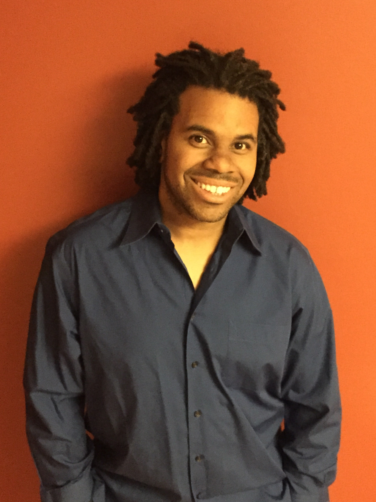

Program Manager
Bridging Technical Solutions & Products to Deliver Impactful Projects

Summary
Exceptional problem solver with a strong background in Agile, program management, QA, and release
management. Motivational leader of high-morale, cross-functional teams, adept at communicating with technical and
non-technical stakeholders, accelerating project delivery by eliminating strategic and operational barriers, and
consistently delivering high-impact software solutions on-time and within budget in fast-paced environments.
Skills
- Certified Scrum Master (CSM)
- Scaled Agile Framework (SAFe)
- Project & Product Management
- Cloud Infrastructure (AWS)
- Technical Director
- Automation & Artificial Intelligence
- Streaming Media Technologies (SAAS)
- Documentation & Writing Expertise
Professional Experience
DIRECTV, El Segundo, CA
Director, Software Engineering (Program Manager) - 2022 to 2025
Led an 8-person cross-functional team as Program Manager for the DIRECTV Stream custom test automation
framework. Owned strategy, innovation, development and support while managing backlog, resources and risks to
deliver high-impact releases. Handled budgets, forecasts and AWS engagements. Oversaw quality and automation
for key features like third-party integrations, subscription bundles, and UI redesigns for the DIRECTV Stream app.
- Boosted test throughput 12x by scaling AWS and on-prem innovation mobile automation framework from 0-to-1.
- Reduced late-cycle bugs by 24% via automation frameworks and QA processes to better analyze KPIs.
- Enhanced executive transparency by introducing bug-reduction KPIs and unified Jira reporting dashboards.
- Cut application permission change error detection time from 60 minutes to 5 by optimizing automation logic.
- Introduced automation strategy and Agile best practices by establishing a Scaled Agile Framework (SAFe)
Community of Practice.
Technical Associate Director (Scrum Master) - 2021 to 2022
Managed and mentored a team of 6 developers supporting the DIRECTV Stream Non-Production environment.
Served as Scrum Master, facilitating team ceremonies and action-oriented meetings with external groups. Monitored
velocity and burn-down metrics to track delivery, resolve complex issues, and drive continuous improvement.
- Elevated automation framework code quality and deployment speed by increasing the unit test coverage from
0% to 90.6% and implementing Ansible, Docker and AWS EC2.
AT&T, El Segundo, CA
Manager Software Engineering (Scrum Master) - 2019 to 2021
Led a Scrum team of 6 developers responsible for ensuring stability and functionality of the AT&T TV Non-
Production environment and its tools. Communicated project status to executives, business and technical
stakeholders, and managed statements of work and financials for third-party contractors.
- Slashed AWS costs by $260K / month by identifying and eliminating unnecessary pre-production infrastructure.
Senior Software Engineer II (Scrum Master/Product Owner) - 2017 to 2019
Served as Scrum Master, Product Owner, and integration tester for a Kanban team managing the DIRECTV Now
Backend Non-Production environment. Authored requirements for dashboards that monitored and reported on
staging environment health.
- Facilitated the initial AT&T TV customer Beta release by coordinating the testing and seamless migration of 91K
DIRECTV Now accounts.
Principal Software Engineer (QA) - 2015 to 2017
Set up, configured and tested DIRECTV satellite and streaming features and test data in the test integration
environment. Designed and documented processes for test account management.
- Enabled access for 150K+ customers to the DIRECTV Now app through strategic project planning.
- Successfully deployed Cloud DVR for 1.5M DIRECTV Now customers by leading pre-loading and bolt-on testing
efforts.
YAHOO!, Burbank, CA
Service Engineer (Technical Operations) - 2012 to 2015
Executed software deployments, engineered and implemented SQL scripts, and supported ad tech platform
enhancements for the high-revenue, 24x7 Yahoo! Ad Exchange and Trust and Safety products.
- Reduced advanced incident (Tier 3) alerts by 80% by creating runbooks and providing group level training.
Launch Manager (Project Manager) - 2006 to 2012
Led global teams across U.S. and Bangalore to launch ad marketplace components for Search and Content Ad
Exchange enhancement.
- Led Search and Content advertising releases and change management for a system generating over $1B in
revenue by optimizing the process of buying and selling ads on the Yahoo! Ad Exchange.
- Launched the internationalization of the Panama content-based ad platform that generated $200M annually by
managing 10 domestic and international cross-functional teams.
- Reduced quarterly SOX audit time by over 60% by clearly defining and streamlining launch procedures.
EDMUNDS.COM, Santa Monica, CA
Enterprise Planning Manager (Technical PM) - 2004 to 2006
Managed online advertising programs for OEM clients like Chevy, Infiniti, Nissan, Lexus, and Toyota on the
customer-facing website using the Waterfall methodology.
- Executed a $2M Nissan advertising contract by implementing the launch of a new header ad unit.
- Spearheaded the development and maintenance of advertising projects generating $7M in revenue.
Tools and Technology Skills
Tools:
- Perplexity, ChatGPT, Claude, Copilot, Atlassian Tools (Jira, Confluence, BitBucket), Visio, MS Project,
ServiceNow, Tableau, Postman, Charles Proxy
Technologies:
- Linux, AWS Cloud, AWS Device Farm, ElasticSearch, Kibana, Docker, Node.js, Firebase, SQL,
JSON, WebDriver IO, Appium, Jenkins
Education
- Bachelor of Arts (BA), Political Science, Brown University, Providence, RI
- Extension Certificate in Linux/Unix, UCLA, Los Angeles, CA
Other Areas of Interest